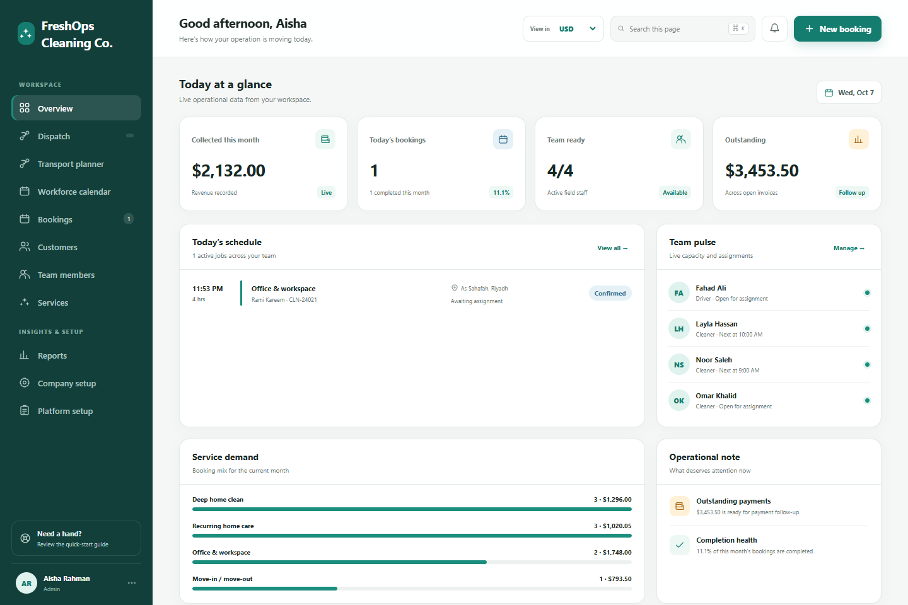
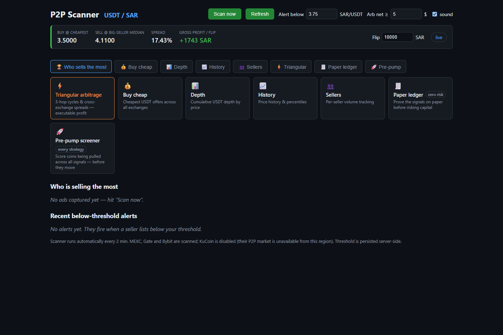
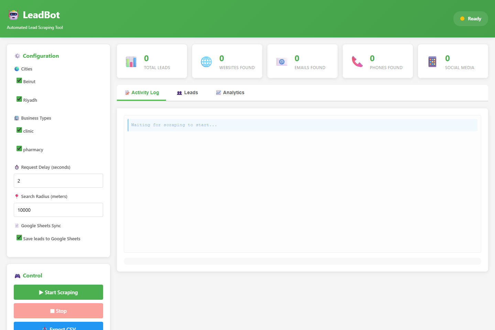
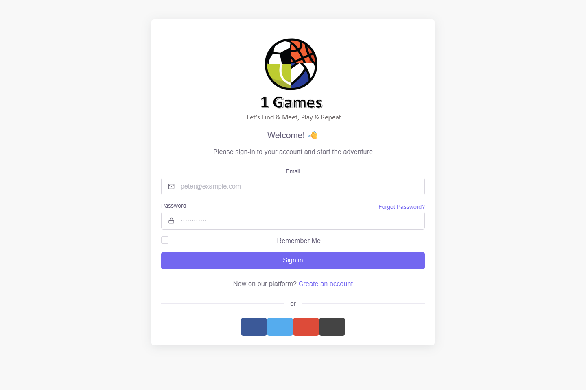
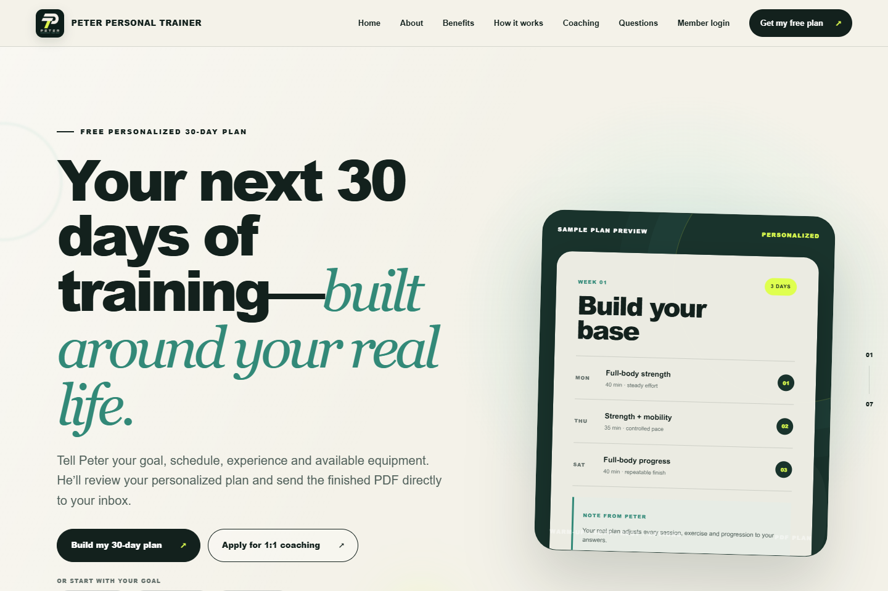
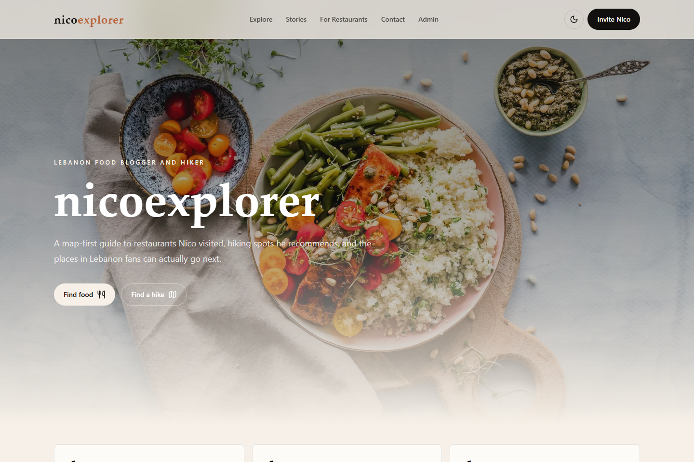

5K+
Notifications par jour
Service d’e-mails et de SMS avec nouvelles tentatives, files de messages en échec et supervision.
Emcrey · Intégrations bancairesIngénieur logiciel senior · Riyad
Chez Emcrey, je développe des intégrations Java pour les lettres de crédit et les garanties bancaires. Mes projets .NET incluent des plateformes d’assurance et des circuits de validation de documents.
Java · .NET · SQL
Schéma de traitement / 01
Recevoir la demande et ses pièces jointes.
Vérifier la demande selon les règles métier.
Soumettre la demande à validation et générer le document.
Consigner les changements de statut et conserver l’historique d’audit.
Résultats de mon travail
Voir mon expérience5K+
Service d’e-mails et de SMS avec nouvelles tentatives, files de messages en échec et supervision.
Emcrey · Intégrations bancaires80%
Imports et exports Excel avec validation pour une plateforme de courtage en assurance.
Clover Broker · Assurance85%
Tests xUnit pour les modules d’entreprise et les processus métier.
Onsite Snagging · Logiciels d’entreprise01 / Projets sélectionnés
Sept projets avec des captures d’écran et des notes sur leur conception.
IA ET EXPÉRIENCE CLIENT
Un chatbot qui intègre l’assistance au produit.
Une expérience d’assistance intégrée réunissant conversations IA, messagerie et contenus d’aide dans un widget utilisable sans quitter le site.
Une application multitenant ASP.NET Core. Le widget intégré et la console Blazor utilisent une API REST et SignalR pour les conversations. PostgreSQL sépare la configuration commune des bases par organisation ; un service en arrière-plan gère les notifications.
Ma réalisation. L’application web, les services backend et le widget intégré, avec une configuration propre à chaque organisation et des parcours de conversation.
Objectif du produit. Réunir l’assistance humaine et l’IA dans une interface accessible et adaptative, avec un widget en anglais et en arabe.

GESTION DES OPÉRATIONS
Un espace unique pour gérer une entreprise de nettoyage : réservations, clients, affectations, équipes et paiements.
Un monolithe modulaire ASP.NET Core sert l’interface web et l’API. Une couche de configuration commune définit les rôles, formulaires et processus par entreprise. La couche de données s’appuie sur EF Core et des bases PostgreSQL dédiées aux nouvelles entreprises, avec un mode de compatibilité pour les entreprises existantes.
Ma réalisation. Une plateforme multi-entreprises avec droits par rôle, planification, règles tarifaires, réservations récurrentes et rapports financiers.
Objectif du produit. Relier le bureau et les équipes terrain grâce à un tableau d’affectation, à l’historique client et à des processus métier configurables.

OUTILS DE MARCHÉ ET AUTOMATISATION
Des scans de stratégies TradingView et un suivi crypto P2P qui transforment les données de marché en listes de surveillance et en alertes claires.
TradingView
Scanner P2P
TradingView. Des scripts Node.js planifiés lisent les données de TradingView, appliquent les règles de scan et gardent un état local pour éviter les rapports Telegram en double.
Marchés P2P. Une solution .NET en Clean Architecture sépare domaine, application et infrastructure. Un service en arrière-plan interroge les plateformes via des adaptateurs, conserve les relevés dans PostgreSQL et diffuse les alertes de l’API vers le tableau de bord React.
TradingView. Détection automatisée des écarts de prix avant ouverture et scan de stratégies, avec vérifications planifiées, prévention des doublons et rapports Telegram.
Marchés P2P. Comparaison des prix entre plateformes, filtres configurables, historique et alertes. La capture montre le tableau de bord P2P ; TradingView suit un parcours distinct.
Objectif du produit. Rendre la recherche reproductible et faire ressortir les conditions de marché pertinentes pour une analyse manuelle.

GÉNÉRATION DE PROSPECTS
Recherche automatisée d’entreprises et de contacts, avec un tableau de bord pour gérer la collecte et les exports.
Aperçu de l’interface · données vides
Un pipeline Python asynchrone sépare recherche, extraction des contacts, notation et export. Flask sert le tableau de bord, Redis conserve l’état des tâches et Socket.IO transmet leur progression. Les prospects peuvent être exportés en CSV ou synchronisés avec Google Sheets.
Ma réalisation. Un pipeline de recherche asynchrone réunissant plusieurs moteurs de recherche, extraction de contacts, filtres d’entreprises et tableau de bord web.
Objectif du produit. Réduire la recherche répétitive et organiser les résultats grâce aux exports CSV et à l’intégration Google Sheets.

SPORT ET RÉSERVATION
Une plateforme reliant joueurs, clubs et terrains, avec recherche de lieux, réservations et communication en temps réel.
Aperçu de l’interface · écran de connexion
Une solution .NET en couches sépare l’application web, la logique de réservation et l’accès aux données. EF Core et SQL Server gèrent clubs, terrains et réservations. Une API de chat distincte utilise SignalR pour les échanges en direct et MongoDB pour leur historique.
Ma réalisation. Des parcours de gestion des clubs, terrains et réservations, avec des API et un service de messagerie en temps réel distinct.
Objectif du produit. Aider les joueurs à trouver des lieux et à organiser leurs réservations. Mes autres travaux de réservation sportive incluent aussi Flutter et Google Maps, comme indiqué dans mon CV.

COACHING ET ESPACE MEMBRE
Un site de coaching reliant un bilan guidé, des programmes personnalisés et un espace membre privé.
Version auto-hébergée. Node.js sert le site React et génère les programmes et les PDF. PostgreSQL stocke comptes, programmes et progression. Les photos privées ne sont servies qu’après contrôle des droits.
Version hébergée d’origine. La version présentée dans la capture utilisait Cloudflare D1 pour les dossiers des membres et un espace R2 privé pour les photos.
Ma réalisation. Un site de coaching adaptatif avec un bilan validé, un moteur local de génération de programmes, des PDF à l’image du site et un parcours de validation et de publication par le coach.
Expérience membre. Connexion par code e-mail, journal d’entraînement, bilans quotidiens, graphiques de progression et stockage privé des photos.

GASTRONOMIE, VOYAGE ET DÉCOUVERTE
Un site de blogueur culinaire qui transforme les visites de restaurants et les recommandations de randonnée en un guide du Liban facile à explorer.
Aperçu local du site · contenu de démonstration
Next.js sert le guide public et l’interface d’édition. Son serveur appelle une API ASP.NET Core privée qui utilise PostgreSQL pour le contenu, les demandes de visite et les sessions du personnel. Les images téléversées sont conservées sur le serveur.
Ma réalisation. Un site adaptatif consacré à la gastronomie et à la randonnée : annuaires avec recherche, cartes géolocalisées, fiches de lieux, liens Instagram et demandes structurées de visite de restaurants.
Objectif du produit. Rendre les recommandations du créateur faciles à retrouver et offrir aux restaurateurs un moyen clair de demander une visite.
Captures de mes projets. Cliquez sur une image pour l’agrandir.
02 / Expérience
Des intégrations bancaires aux plateformes métier, j’interviens concrètement sur tout le cycle de vie du logiciel.
Choisir une édition du CVDéveloppeur backend Java senior · Riyad
Systèmes bancaires pour lettres de crédit et garanties. Microservices Spring Boot, intégrations externes, IBM MQ, Kafka et services de notification.
Développeur full stack .NET · Indépendant
Plateforme complète de courtage en assurance couvrant contrats, paiements, rapports et administration, avec déploiement Azure et livraison automatisée.
Responsable du développement web full stack
Modules d’entreprise, circuits documentaires, formulaires dynamiques, API mobiles et tests automatisés. Pilotage des sprints et revues de code.
Exquitech · Neorcha · GridPos
Développement full stack, applications mobiles, services Java et applications de bureau dans l’hôtellerie, le contrôle qualité et le commerce.
03 / Quelques mots sur moi
J’ai travaillé sur les systèmes qui gèrent les transactions bancaires, les contrats d’assurance et la validation des documents.
J’ai développé des intégrations bancaires à Riyad, des processus d’assurance et des applications d’entreprise. Cette expérience guide mon approche : comprendre les règles métier, fiabiliser le backend et rendre la prochaine action claire pour l’utilisateur.
Mes projets indépendants concrétisent cette approche, du chatbot d’assistance intégré à la gestion d’une entreprise de nettoyage et à l’espace membre de coaching. Ils réunissent API, données, interfaces et déploiement.
J’ai également dirigé la planification des sprints et les revues de code d’une équipe de trois développeurs. Je travaille sur les détails de l’implémentation tout en gardant une vue d’ensemble de la livraison.
B.Sc. en informatique
Lebanese Canadian University · 2018
Java · C# · Spring Boot · ASP.NET Core
API REST · Microservices · Systèmes événementiels
SQL Server · PostgreSQL · MySQL
Entity Framework · Dapper · Kafka · IBM MQ
JavaScript · TypeScript · React · Python · Flutter
Azure · AWS · Docker · GitHub Actions
Développement backend Java ou .NET senior
Plateformes métier full stack · Intégration d’API
Pour les recruteurs et équipes RH
Choisissez une édition régionale de mon CV.
Chaque édition présente mon expérience, mes projets et mes liens professionnels.
Les CV téléchargeables sont en anglais.
04 / Contact
Basé à Riyad · Ouvert au télétravail
Pour un poste en ingénierie logicielle ou une demande de projet.